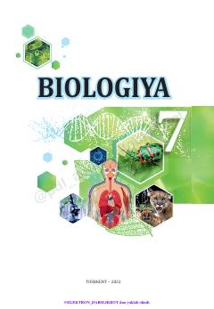

B77-sinf o'quvchilari uchun biologiya fanidan rasmiy maktab darsligi.
Ushbu darslik 7-sinf o'quvchilari uchun mo'ljallangan bo'lib, tirik organizmlarning xilma-xilligi, hujayra tuzilishi, o'simliklar organlari hamda organizmlarning hayotiy jarayonlari haqida ma'lumot beradi. Kitobda nazariy bilimlar bilan bir qatorda amaliy va laboratoriya mashg'ulotlari ham o'rin olgan.